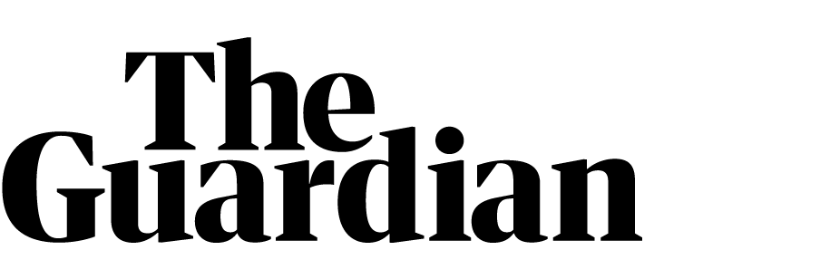

POTUS continued: "I see an opportunity to create millions of good paying middle class union jobs. I see line workers laying thousands of miles of transmission lines for a clean, modern resilient grid. I see workers capping hundreds of thousands of abandoned oil and gas wells that need to be cleaned up and abandoned coal mines that need to be reclaimed, putting a stop to the methane leaks and protecting the health of our communities.
"I see auto workers building the next generation of electric vehicles and electricians installing nationwide 500,000 charging stations along our highways. I see the engineers and the construction workers building new carbon capture and green hydrogen plants to forge cleaner steel and cement and clean power. I see farmers deploying cutting edge tools to make soil of our heartland the next frontier in carbon innovation.
"By maintaining those investments and putting these people to work, the United States sets out on the road to cut greenhouse gases in half – in half – by the end of this decade.
"That's where we're headed as a nation and that's what we can do if we can take action to build an economy that's not only more prosperous but healthier, fairer and cleaner for the entire planet. You know, these steps will set America on a path of a net zero emissions economy by no later than 2050 but the truth is America represents less than 15% of the world's emissions. No nation can solve this criss on our own, as I know you all fully understand.
"All of us, all of us, and particularly those of us who represent the world's largest economies, we have to step up. Those that do take action and make bold investments in their people, in clean energy future, will win the good jobs of tomorrow and make their economies more resilient and more competitive. So let's run that race and win more, win more sustainable future that we have now, overcome the existential crisis of our times."
More to follow.
--
David Smith
Washington bureau chief
Guardian News & Media
-----
▊▊▊▊▊▊▊▊▊▊
▊▊▊▊▊▊▊▊▊▊
▊▊▊▊▊▊▊▊▊▊
-----
twitter: @SmithInAmerica
------

▊▊▊▊▊▊▊▊▊▊theguardian.com
-----
Download the Guardian app for Android and iOS
-----
This e-mail and all attachments are confidential and may also be privileged. If you are not the named recipient, please notify the sender and delete the e-mail and all attachments immediately. Do not disclose the contents to another person. You may not use the information for any purpose, or store, or copy, it in any way. Guardian News & Media Limited is not liable for any computer viruses or other material transmitted with or as part of this e-mail. You should employ virus checking software.
Guardian News & Media Limited is a member of Guardian Media Group plc. Registered Office: PO Box 68164, Kings Place, 90 York Way, London, N1P 2AP. Registered in England Number 908396